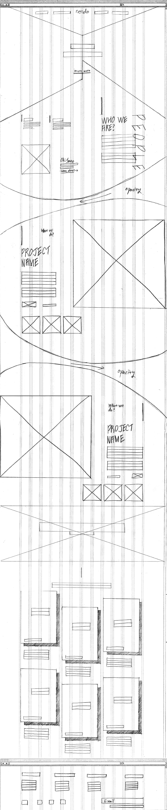
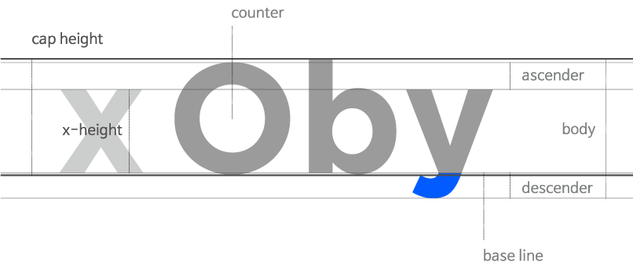
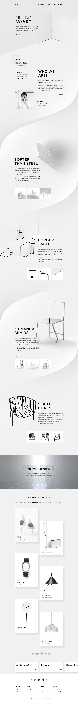
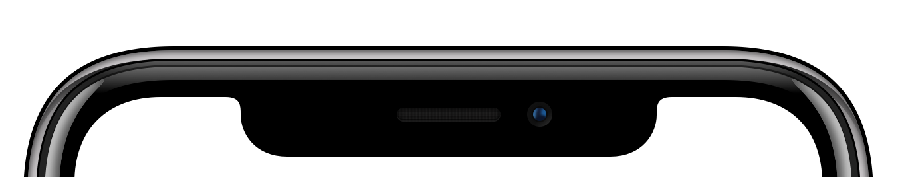

들어가며
지금 주위를 둘러보자. 주머니사정과 제품의 기술적 완성도 등을 따져봤을때 훨씬 합리적인 제품도 있지만 "디자인이 이뻐서...."라는 이유로 구매결정을 내려버린 제품이 하나쯤은 있을 것이다. 물론 기술과 품질의 우수성이 구매의 타당한 이유가 되기 때문에 합리적 소비가 가능할 수도 있다. 이렇듯 디자인은 사람들의 생활에 밀접한 관계를 가지게 된다. Apple의 제품을 예로 들자면 사람들은 Apple의 제품을 너무 좋아한 나머지 입덕부정기를 거쳐 자신을 앱등이라고 칭한다. 이것이 비록 주체적인 소비는 아닐지 언정 신조어가 생겨날 만큼 디자인에 초점을 두는 소비자가 많아지고 있음을 알 수 있다.
그렇다면 예술분야는 어떨까?
디자인이 중요한 시대에 디자인 사촌격인 예술은 한마디로 대중적이지도 않고 이해하기도 힘든 분야일 뿐이다. 일반인들과는 다른 시각으로 세상을 바라보는 작가의 알수없고 알고싶지도 않은 내면 세계에 대한 고찰 정도라 하겠다. 비전문가에겐 퍽이나 가까운 존재가 아닐 수 없다.
다가가기 어려운 개념을 좀 더 대중적으로 받아들일 수는 없을까?
상대가 원하는 것을 예측하여 문제를 해결하는 것까지 디자이너의 영역이다. 예술은 자신의 개인적인 의사가 담겨있기 때문에 상대의 수많은 개인적 해석이 난무하고 그로인해 보다 쉽게 문제를 해결할 수 있다.
그래서 디자인과 예술의 결합이 주는 시너지효과는 보다 강력할 것이다. 이러한 인식을 바탕으로 브랜드의 가치관과 본질을 개선하고 브랜드가 지향하고자 하는 바를 대중들에게 잘 전달하는데 있어서 징검다리역할을 하게될 디자인과 이것을 예술적으로 풀어나가는 표현방식에 대해 고민을 하면서 본 프로젝트가 시작되었다.
그래서 디자인과 예술의 결합이 주는 시너지효과는 보다 강력할 것이다. 이러한 인식을 바탕으로 브랜드의 가치관과 본질을 개선하고 브랜드가 지향하고자 하는 바를 대중들에게 잘 전달하는데 있어서 징검다리역할을 하게될 디자인과 이것을 예술적으로 풀어나가는 표현방식에 대해 고민을 하면서 본 프로젝트가 시작되었다.
NENDO를 선택한 이유
디자인과 예술에 대해 설명할 수 있는 가장 좋은 소재를 찾아내고 싶었다. 그래서 nendo(넨도) 였다. 생소한 이름의 넨도. 창작의 동기가 대단히 예술적 감성인 넨도. 그렇지만 스토리텔링은 누구나 공감할 수 있는 일상적인 이야기이며, 제품들은 실생활에 밀접한 종류들이었기에 디자인과 예술의 경계를 풀어나가는 과정을 설명하기엔 더할 나위없이 좋은 소재였다.
NENDO란?
일본어로 진흙(점토)이란 뜻으로 자유롭고, 다양한 디자인을 추구한다. 점토란 어떤형태로도 변할 수 있는 넨도의 철학을 담은 이름으로 하얀점토처럼 물처럼 공기처럼 모든것을 흡수하고 받아들일 준비가 되어있다. 점토라는 의미의 회사명처럼, 특정 분야에 한정되지 않고 제품, 가구, 조명, 인테리어, 설치, 건축을 아우르는 분야에서 총 400개가 넘는 프로젝트를 동시에 다루며 날마다 접하는 일상 속 작은 발견을 담고 있다.
넨도 이해하기
회사의 철학
사토 오오키식의 ‘문제발견’, ‘아이디어 생산’, ‘문제해결’, ‘전달방식’, ‘디자인’ 강좌의 내용을 해석해서 살펴보자면 머리를 비우는것이 디자인적 사고의 시작이며, 디자인의 경계는 없는것이고, 디자인의 존재는 어디에도 있다라는걸 알려주고 있다.
디자인 재해석
디자인이란 문제해결을 위해 ‘새로운 길’을 찾는 작업이라고 할 정도로 디자인 문제해결 사고방식에 대한 많은 프로세스를 가지고 있으며 또한 2권의 책으로도 설명하였다.
사토 오오키는 룰 안에서 과제 자체를 재해석해서 생각할게 아니라, 룰 그 자체를 부드럽게 흐트러트려 볼 필요가 있으며 ‘탈선’을 활용해 지그재그의 흐름으로 깨달음을 얻어 본줄기를 뒤흔들면서 경직화되었던 아이디어를 부드럽게 풀어야 한다고 했다.
사토 오오키는 룰 안에서 과제 자체를 재해석해서 생각할게 아니라, 룰 그 자체를 부드럽게 흐트러트려 볼 필요가 있으며 ‘탈선’을 활용해 지그재그의 흐름으로 깨달음을 얻어 본줄기를 뒤흔들면서 경직화되었던 아이디어를 부드럽게 풀어야 한다고 했다.
회사의 비전
일본 디자인계를 대표하는 차세대 디자이너 사토 오오키는 넨도의 비전은 안정적이고 높은 품질의 디자인을 지속적으로 제공한다는 목표를 지닌 사고방식을 목적으로 한다고 했다. 또한 디자인 회사를 차별하는 최대요소는 아이디어이며, 아이디어로 승부해 다른 디자인 회사와 차별화를 꾀하는 동시에, 회사를 경제적으로 안정시켜 우수한 인재를 확보하고 육성시키기 위해서 넨도를 만들었다.
회사의 가치
현재 넨도가 내세우는 핵심가치는 클라이언트의 기대를 알아내는 뛰어난 업무 처리방식과 유연한 사고법이 존재하는 디자인 전문가 집단으로 안정적인 70점 이상의 아이디어를 뽑아낼 수 있는 플랫폼이 있다.
문제점
지극히 단순한 구조
단조로운 레이아웃이 이 사이트에 가장 큰 문제점이라고 할 수 있다. 세계적인 디자인 스튜디오 회사로 경쟁력이 있어 굳이 사이트를 마케팅 요소로 사용하지 않아도 된다라는 거만한 생각을 가지고 있는지 물어봐야 하지 않을까. 이 질문에 대한 대답은 모바일 웹 사이트를 보고 짐작하는 바이다. 일본 디자인 스튜디오 회사답게 심플한 디자인이 돋보이지만 처음 사이트를 방문한 사용자가 얻을 수 있는 정보는 헤더와 네비게이션이 사이트 구성의 전부이다. 군더더기 없는 정보설계가 아닐 수 없다. 사이트 방문 목적과 타겟층을 정하는것을 시작으로 토탈 디자인 특성에 맞게 컨텐츠 제작이 필요하다.
강점이 약점이 될 수있다.
완성형을 짓지 않는것이 넨도식 디자인이다. 클라이언트의 니즈를 파악하고 수많은 제약속에서 끊임없는 기발한 아이디어는 넨도의 강점이라 할 수 있다. 경계없는 토탈 디자인의 특성상 특정분야에 한정되지 않고 제품, 가구, 조명, 인테리어, 설치, 건축을 아우르는 분야에서 많은 프로젝트를 다루기 때문에 제품의 특성에 맞는 각자 다른 color와 mood를 조성하지만 하나의 브랜드처럼 인식되지 않기에 보이지 않는 문제가 존재한다.
넨도의 감성은 어디에?
단순한 구조로 인해 방대한 양의 프로젝트는 시각적 동선을 고려하여 F법칙으로 사용자 관점에서 기본적인 정보를 제공하고 있지만 브랜드에 대한 정보는 노출되고 있지 않다. 원래 넨도는 높은 품 질의 상품으로 기업의 종합적 가치를 장기간 창출하고 안정적인 운영방식을 취하는 것이었으나 한편으론 디자인 플랫폼을 구축하길 원하면서 클라이언트의 기대 또한 충족시키고, 브랜드 아이덴티티까지 잃지 않아야했다. 디자인 플랫폼이라는 넨도 산하의 각 파트별 디자이너들이 생기면서 브랜드 아이덴티티는 더 약해졌다. 사용자와 브랜드간의 상호작용을 통해 관계를 구축하기 위해서 제품의 이미지를 최대한 살리면서 매력적인 아이템의 시각적 표현화가 필요한 시점이다.
개선안
사이트의 목적을 다시잡다.
사이트에 방문하는 목적이 구매를 위한 것이 아닌 오피셜 사이트이기 때문에 회사, 브랜드 그리고 프로젝트를 소개하는데 초점을 맞추어야 했다. 일본어와 영어로 구성된 다국어 웹사이트이지만 한국어 버전은 없기 때문에 국내 사이트에 맞는 콘텐츠 제작이 필요했다.
브랜드 아이덴티티의 재해석
넨도의 정신을 담은 무형의 플랫폼에서 벗어나, 각 프로젝트마다 스토리텔링이 가능한 예술의 성격을 지닌 프로젝트들을 대중들과 가깝게 느껴질 수 있도록 넨도의 새로운 브랜드 이미지를 전달하고자 했다. 물론 넓은 분야를 디자인하기 위해서 명확한 아이덴티티가 장애물이 된다고 생각할 수 있다. 오히려 뚜렷한 아이덴티티가 있다면 예술가라고 해야 마땅하다. 그래서 넨도는 명확한 아이덴티티를 가지고 장애물이 될 수 있는 요소들을 장점으로 승화시켜 예술가적 기질을 표출해야된다고 생각했다.
디자인 방향성 제시
브랜드 컨셉 설정 이후, 이를 구체적으로 구현하기 위한 디자인 전략 및 원칙을 설정하였다. 프로젝트별 상품들의 존재감이 방해받지 않는 선에서 디자인과 예술의 간극을 좁혀주는 표현방법이 필요했다. 웹사이트 공간을 전시공간이라 가정할 수 있으며, 제품은 전시제품이라 할 수 있다. 때문에 전시공간에는 전시제품이 잘 녹아져있기에 균형있는 구조설계가 가능했다.
카드 레이아웃에 그림자와 빛을 이용하여 고밀도의 묘사와 리얼한 질감으로 촉각을 자극시키며 디테일에 집중할 수 있게 하였다.
카드 레이아웃에 그림자와 빛을 이용하여 고밀도의 묘사와 리얼한 질감으로 촉각을 자극시키며 디테일에 집중할 수 있게 하였다.
페이퍼스케치 & 와이어프레임
넨도의 비주얼을 돋보이기 위해서 상단에 메인비주얼을 배치하고 GNB는 왼쪽에는 로고와 오른쪽에는 대표적 메뉴들을 배치했다. 넨도의 뜻과 철학에 대한 설명과 넨도는 무엇을 하는지에 대해서 설명이 필요하여 메인 다음으로 구성하였고, 브랜드의 아이덴티티를 설명하기 위해 대표 작품 4개를 선정하여 대중에게 다가온 예술을 잘 설명할 수있도록 배치하였다. 방향성을 잃지 않도록 넨도의 전체작품의 길라잡이 역할을 해줄 배너와 눈에 잘 보이도록 메뉴를 구성하였으며 마지막으로는 브랜드의 방향성에 대해 소개해줄 수 있도록 하며 Footer를 마지막으로 와이어프레임 구성을 마쳤다.
페이퍼 스케치와 다름없이 와이어 프레임이 진행되었으나 header와 main visual intro부분의 전체적인 디자인이 변경되었고, 디바이스가 변경됨에 따라 카드 레이아웃이 변경되기도 하였다.
-
1200 GRID

-
768 GRID
-
360 GRID
서체

GOTHAM
비정형의 그래픽이 사이트 전반에 걸쳐있는 가운데 제목에 사용될 영문서체는 보다 담백한 감정으로 표현하여 밸런스를 맞춰야했다. 고선명도의 부재를 메우기위해 디스플레이한 고딕계열의 서체인 Gotham을 사용하여 주목성을 높였다.
제목은 Gotham Bold와 Gotham Medium을 사용하였다. 제목 대부분이 대문자로 쓰여지기 때문에 counter의 모양이 정원의 형태이며, 간결하고 담백하게 보이기 위해 ascender와 descender는 과장없이 들어가 body안의 x-height가 차지하는 비율이 높기 바랬다. 또한 본문에 비해 여유있는 자간이여야 했고, 대표 제품 소개의 제목은 자간 30을 더 늘렸다. 화면의 뛰어난 렌더링을 보장하기 위해 웹폰트로 사용 가능 한지의 여부 또한 중요한 조건 중 하나였다. 다른 서체와 확연히 다른 무게감있는 구조로 이루어져 있어 같은 고딕계열인 한글본문과의 구성도 매끄럽게 연결되어 균형잡힌 공간을 이끌어낼 수 있었다.

나눔바른고딕
영어서체와의 조화를 위해 같은 고딕계열을 사용하며, 휘어진 세리프나 라운드 서체가 아닌 사용자가 읽기 좋은 산세리프체를 사용하고 싶었다.
본문의 성격을 잘 보여줄 수 있도록 좁은 자간이어야 했으며, 디스플레이상의 가독성을 위해 TTF(트루타입폰트)가 아닌 OTF(오픈타입폰트)을 사용하여 힌팅정보가 들어가 안티엘리어싱 처리가 가능한 정통 고딕 서체인 나눔바른고딕을 사용하였다. 나눔바른고딕은 한글 조합으로 만들 수 있는 모든 글자가 가능했고 서체 자체에서 굵기에 따른 디자인을 나눠주었기 때문에 인위적으로 굵게 처리하는 디자인보다 훨씬 세밀하고 깔끔하여 완성도를 높여주었다.
디자인 과정
-
첫번째시안
-
두번째시안

최종 결과물
반응형 웹
-

-

그리드 시스템
-
LARGE PC1200grid / 12column
-
TABLET768grid / 12column
-
MOBILE360grid / 12column
코딩하면서
코딩하면서 제일 힘들었던 점은 background-image였다. main섹션영역의 그래픽배경은 페이지 전반의 큰 부분을 차지하기 때문에 가장 신경써야 할 코딩중 하나였다. 이 그래픽 요소는 main섹션에 해당되는 background-image일 뿐만 아니라 explain섹션영역에도 반 이상을 차지하며 두개의 섹션이 겹칠 수 밖에 없는 배경이다.
콘텐츠를 각각의 섹션으로 구성할 경우 main의 background-image는 css의 top값이 마이너스가 되어 exlain섹션위에 얹어지게 된다. 이미지 위에 이미지가 얹어지게 된다면 문제가 없겠지만 explain섹션에는 드래그가 필요한 글자와 클릭이 되어야하는 링크가 있었다. position으로 둘다 띄워서 z-index를 조정해도 되지만 근본적인 문제 해결을 위하여 마크업 수정이 필요하였다. 그래서 따로 content라는 섹션으로 한번 묶어주고 그 안에서 섹션별로 나누었다.
4개의 메인 제품들의 이미지는 전체배경 칼라 #f3f3f3과 일체화 시키기 위해 일반적인 사각형 모양으로 구분하지 않고 물 흐르듯 어우러지게 이미지 작업 따로 해놓아야 했고, 디바이스별로 background-image의 위치를 조정해야하는 세심함이 필요했다.
내가 배운 것들
좋은 디자인인이란 어떤 것인지 더 깊게 느낄 수 있었다. 디자인 문제해결연구소와 디자인 이야기라는 책을 낼 만큼 디자인에 대한 심도깊은 고민들과 방향성을 잃지 않고 나아가는 브랜드를 리디자인하는것에 꽤 부담감을 느꼈다. 하지만 이런 브랜드에게도 다음단계는 있었다.
리디자인에서 가장 중요한 포인트는 새로운 가치를 만들어내고 있느냐의 여부이다. 라는 마음가짐을 새기며 내 자신이 클라이언트가 되어 프로젝트를 진행했다. 어수선한 프로젝트들을 한 데 모아 하나의 브랜드처럼 보이게 하자라는 대략적인 틀이 나온 상태에서 어떤식의 컨셉으로 그려나가야 할지 그림을 그리면서 많은 고민을 했다. 머리속에는 항상 말로 설명할 수 없는 무언가가 있었는데 언어로 표현하고자 할때는 머리속의 방이 열리지 않았다. 내가 클라이언트가 되어 자신과의 커뮤니케이션이 필요한 상황에서 전달하고자 하는 바를 제대로 표현하지 못하는 상황이 답답했다. 그 문을 열어 문자로 만들기 위해선 최대한 많은 레퍼런스가 필요했고, 언어의 표현이 중요하다는 것을 깨달았다.
브랜드 이미지를 정리하고 나서 디자인 컨셉을 잡았어야 했는데, 프로젝트들을 연결하는 시각적 표현방법인 디자인 방향성을 먼저 생각하고 진행했기 때문에 헤맸던것 같다. 그래서 시각적표현을 먼저 생각하는것 보다, Brainstorming의 과정을 단계별로 거쳐 프로젝트의 방향성을 생각하는 것이 중요하다고 느꼈다.